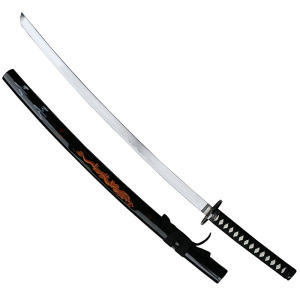
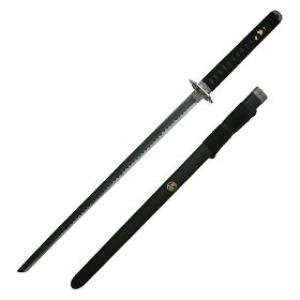

|  |  | |||
KATANA Katana adalah senjata paling umum dimiliki oleh para Samurai pada masa feodal Jepang. Karakteristik pedang ini mempunyai pisau agak melengkung bermata tunggal, dengan pembatas berbentuk lingkaran atau kotak. Selain itu grip-nya pun agak panjang, sehingga mudah digenggam dengan kedua tangan. |
NINJATO Ninjato adalah senjata yang umumnya dimiliki oleh para Ninja. Ciri khas yang paling mudah dikenali yaitu, pisau dan grip berbentuk lurus dan nggak mempunyai lengkungan. |
|||
Halaman 1 |